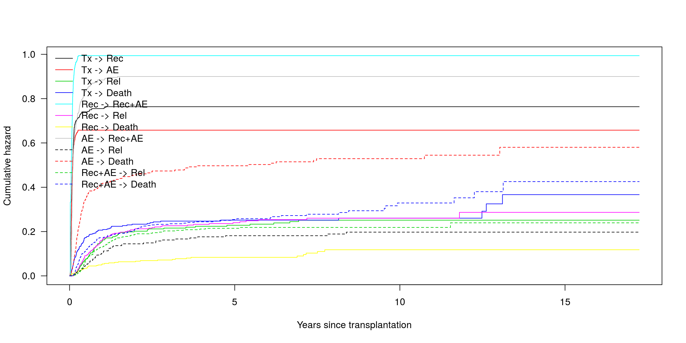
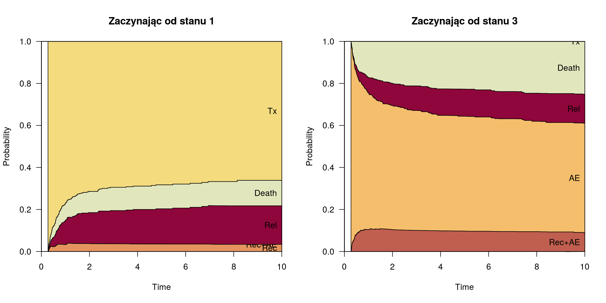

mstate: przygotowanie danych, estymacja i predykcja w modelach wielostanowych
Marcin Kosiński
24 Października, 2016
Model wielostanowy
Model wielostanowy

Model wielostanowy - macierz przejść
library(mstate)
(transMat(list(c(2,3,5,6), c(4,5,6), c(4,5,6), c(5,6), c(), c()),
names=c("Tx", "Rec", "AE", "Rec+AE", "Rel", "Death")) -> tmat) to
from Tx Rec AE Rec+AE Rel Death
Tx NA 1 2 NA 3 4
Rec NA NA NA 5 6 7
AE NA NA NA 8 9 10
Rec+AE NA NA NA NA 11 12
Rel NA NA NA NA NA NA
Death NA NA NA NA NA NAPytanie badawcze
Pytanie badawcze
Efekt zmiennych w każdym z możliwych przejść (ang. transition).
Dane - przygotowanie
Przykładowe Dane - ebmt4
data("ebmt4");head(ebmt4) id rec rec.s ae ae.s recae recae.s rel rel.s srv srv.s year agecl
1 1 22 1 995 0 995 0 995 0 995 0 1995-1998 20-40
2 2 29 1 12 1 29 1 422 1 579 1 1995-1998 20-40
3 3 1264 0 27 1 1264 0 1264 0 1264 0 1995-1998 20-40
4 4 50 1 42 1 50 1 84 1 117 1 1995-1998 20-40
5 5 22 1 1133 0 1133 0 114 1 1133 0 1995-1998 >40
6 6 33 1 27 1 33 1 1427 0 1427 0 1995-1998 20-40
proph match
1 no no gender mismatch
2 no no gender mismatch
3 no no gender mismatch
4 no gender mismatch
5 no gender mismatch
6 no no gender mismatchPrzykładowe Dane - ebmt4

Kodowanie danych
msebmt <- msprep(
data = ebmt4, trans = tmat,
time = c(NA, "rec", "ae", "recae", "rel", "srv"),
status = c(NA, "rec.s", "ae.s", "recae.s", "rel.s", "srv.s"),
keep = c("match", "proph", "year", "agecl"))
msebmt[msebmt$id == 1, c(1:8, 10:12)]An object of class 'msdata'
Data:
id from to trans Tstart Tstop time status proph year agecl
1 1 1 2 1 0 22 22 1 no 1995-1998 20-40
2 1 1 3 2 0 22 22 0 no 1995-1998 20-40
3 1 1 5 3 0 22 22 0 no 1995-1998 20-40
4 1 1 6 4 0 22 22 0 no 1995-1998 20-40
5 1 2 4 5 22 995 973 0 no 1995-1998 20-40
6 1 2 5 6 22 995 973 0 no 1995-1998 20-40
7 1 2 6 7 22 995 973 0 no 1995-1998 20-40Kodowanie danych 2
msebmt2 <- expand.covs(msebmt, longnames = FALSE,
c("match", "proph", "year", "agecl"))
msebmt2[msebmt2$id == 1, -c(9:10, 12:48, 61:84)]An object of class 'msdata'
Data:
id from to trans Tstart Tstop time status year year2.1 year2.2 year2.3
1 1 1 2 1 0 22 22 1 1995-1998 1 0 0
2 1 1 3 2 0 22 22 0 1995-1998 0 1 0
3 1 1 5 3 0 22 22 0 1995-1998 0 0 1
4 1 1 6 4 0 22 22 0 1995-1998 0 0 0
5 1 2 4 5 22 995 973 0 1995-1998 0 0 0
6 1 2 5 6 22 995 973 0 1995-1998 0 0 0
7 1 2 6 7 22 995 973 0 1995-1998 0 0 0
year2.4 year2.5 year2.6 year2.7 year2.8 year2.9 year2.10 year2.11 year2.12
1 0 0 0 0 0 0 0 0 0
2 0 0 0 0 0 0 0 0 0
3 0 0 0 0 0 0 0 0 0
4 1 0 0 0 0 0 0 0 0
5 0 1 0 0 0 0 0 0 0
6 0 0 1 0 0 0 0 0 0
7 0 0 0 1 0 0 0 0 0Liczba przejść
events(msebmt)$Frequencies to
from Tx Rec AE Rec+AE Rel Death no event total entering
Tx 0 785 907 0 95 160 332 2279
Rec 0 0 0 227 112 39 407 785
AE 0 0 0 433 56 197 221 907
Rec+AE 0 0 0 0 107 137 416 660
Rel 0 0 0 0 0 0 370 370
Death 0 0 0 0 0 0 533 533round(events(msebmt)$Proportions,2) to
from Tx Rec AE Rec+AE Rel Death no event
Tx 0.00 0.34 0.40 0.00 0.04 0.07 0.15
Rec 0.00 0.00 0.00 0.29 0.14 0.05 0.52
AE 0.00 0.00 0.00 0.48 0.06 0.22 0.24
Rec+AE 0.00 0.00 0.00 0.00 0.16 0.21 0.63
Rel 0.00 0.00 0.00 0.00 0.00 0.00 1.00
Death 0.00 0.00 0.00 0.00 0.00 0.00 1.00Małe porządki
msebmt2[, c("Tstart", "Tstop", "time")] <-
msebmt2[, c("Tstart", "Tstop", "time")]/365.25Modele
Model nieparametryczny
library(survival)
c0 <- coxph(Surv(Tstart, Tstop, status)~strata(trans),
data = msebmt2, method = "breslow")This Cox model has separate baseline hazards for each of the transitions and no covariates. In principle, the transition intensities could also be estimated separately, but the combined use of long format data and a single stratified
coxphobject makes further calculations easier.
msf0 <- msfit(object = c0, vartype = "greenwood", trans = tmat)
# msfit estimates transition hazardsModel nieparametryczny
#summary(msf0)
head(msf0$Haz) time Haz trans
1 0.002737851 0.000000000 1
2 0.008213552 0.000000000 1
3 0.010951403 0.000000000 1
4 0.013689254 0.000000000 1
5 0.016427105 0.000443066 1
6 0.019164956 0.001333142 1tail(msf0$Haz) time Haz trans
6199 12.48460 0.3800455 12
6200 12.61602 0.3800455 12
6201 13.02396 0.3800455 12
6202 13.10609 0.3800455 12
6203 13.12799 0.4255001 12
6204 17.24572 0.4255001 12Wykres sk. hazardów
plot(msf0, las = 1, lty = rep(1:2, c(8, 4)),
xlab = "Years since transplantation")
Predykcja
Wspomagacz
library(colorspace)
state_cols <- heat_hcl(6,
c = c(80, 30),
l= c(30, 90),
power = c(1/5,2))[6:1]
ord <- c(2, 4, 3, 5, 6, 1)Stan 1, czas = 0 dni
pt0 <- probtrans(msf0, predt = 0, method = "greenwood")
plot(pt0, ord = ord, las = 1, col = state_cols[ord],
xlab = "Years since transplantation", type = "filled")
Stan 1 a 3, czas = 100 dni
pt100 <- probtrans(msf0, predt = 100/365.25, method = "greenwood"); par(mfrow=c(1,2))
plot(pt100, ord = ord, xlim = c(0,10), las = 1, type = "filled", col = state_cols[ord], main = "Zaczynając od stanu 1")
plot(pt100, from = 3, ord = ord, xlim = c(0,10), las = 1, type = "filled", col = state_cols[ord], main = "Zaczynając od stanu 3")
Model parametryczny
Model parametryczny
mvna, etm - także wspierają obliczenia skumulowanych hazardów
jednak nie mają wsparcia dla modeli semi-parametrycznych, jak model Coxa.
Model parametryczny
cfull <- coxph(Surv(Tstart, Tstop, status)~
match.1 + ... + match.12 +
+ proph.1 + ... + proph.12 +
+ ... + strata(trans), data = msebmt, method = "breslow")
Uwagi
Uwagi
- Nie sprawdzano założeń i dopasowania modelu.
Możliwe udoskonalenia
- input do
coxphw postaci macierzy rzadkiej - funkcja
msdatado tworzenia nowych obserwacji - wykresy diagnostyczne w
ggplot2